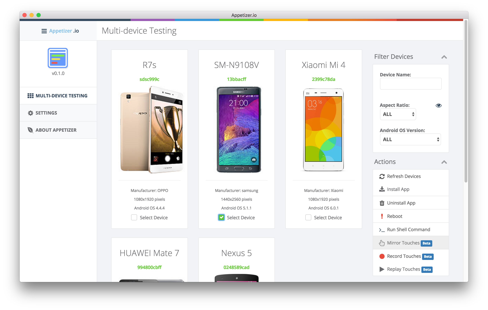

Azard's Projects
Home
Resume
Projects
Blog
Undergraduate projects 2012 ~ 2016
Main Projects
Appetizer
| 2016.3 ~ Now
HomePage
Mobile DevOps platform
Submodule:
Information collecting SDK
Submodule:
Eevee
, appetizer RESTful api backend and user accounts interface

Pokemon-Named Projects/Modules List
No.004 Charmander 小火龙：阿里巴巴御膳房移动版通信框架，已夭折。2015年7月~2015年8月
No.007 Squirtle 杰尼龟
：Android App 记录卡片，练手项目。2016年2月
No.007 Caterpie 绿毛虫
：上海市工会健步走活动第一版，活动筹办失败。2016年3月~2016年4月
No.008 Metapod 铁甲蛹
：上海市工会健步走活动第二版，6万日活跃用户。2016年7月~2016年10月
No.019 Rattata 小拉达
：Scala抽象语法树格式化输出工具，源于研究生课程“程序分析与合成”。2015年12月
No.039 Jigglypuff 胖丁
：Nodejs写的
嗨加游
微信公众号对话后台，用于活动报名组队，技术外原因下线。2016年8月
No.041 Zubat 超音蝠
：iOS视频场景字幕标记工具。2016年3月~2016年4月
No.108 Lickitung 大舌头
：Scala潜在bug静态分析工具。2015年12月
No.133 Eevee 伊布
：Appetizer用户管理模块。2016年8月~现在
No.151 Mew 梦幻：Appetizer Wand 后台模块。2016年11月~现在
Unnumbered Projects/Modules List
Wenjuan
：2016级上海交通大学新生心理调研系统，使用人数超过6000人，峰值QPS 50+不卡。
Last Update: 2017/02/23